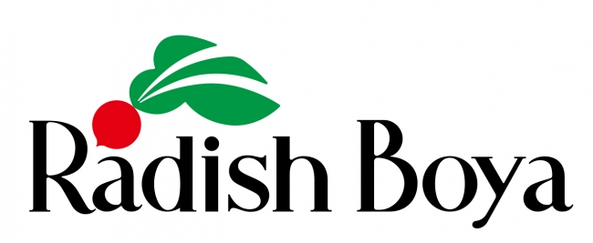
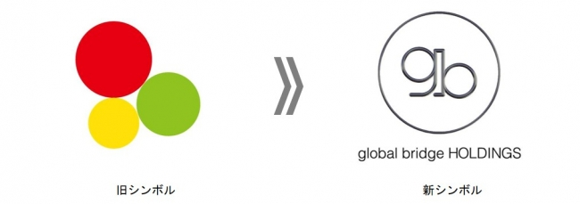

日本
大宗交易

Goldman Sachs
×
E*TRADE Securities
执行Goldman Sachs管理的基金所持有的E*TRADE Securities(现SBI Securities)股份的日本最大规模级别的大宗交易。
本人自1974年加入野村证券、1983年加入Morgan Stanley、1988年加入CS First Boston(后更名为Credit Suisse,现为UBS集团),积累丰富职业经验后,于1996年独立创业。半个多世纪以来,始终活跃于投资银行业务的最前沿。
遗憾的是,日本企业海外M&A失败的案例不胜枚举。本人认为,其主要原因在于:客户未经充分审视,便接受了国内外大型投资银行和证券公司的建议。本公司作为独立的M&A精品投行,使命是在客户的M&A决策中提供中立且客观的建议。
2008年10月,本人在香港共同创立了国际跨境M&A联盟「Global Alliance Partners (GAP)」,目前担任日本代表。通过GAP加盟成员,能够实时获取各国市场的可靠信息。在海外M&A中至关重要的本地情报,我们以最短路径传递给客户。
期望我们半个多世纪的投资银行经验和GAP网络所拥有的信息渠道,能为各位在制定经营战略及M&A战略时的准确判断提供助力。

执行Goldman Sachs管理的基金所持有的E*TRADE Securities(现SBI Securities)股份的日本最大规模级别的大宗交易。
Softbank Investment株式会社(现SBI Holdings)的国内企业收购案。
Ardepro株式会社对Japan Realty Supervision (JRS) 的收购。

Q'sai株式会社的子公司Radish Boya株式会社出售方咨询。

JAFCO株式会社对Q'sai株式会社子公司Radish Boya株式会社的收购。
Japan Industrial Partners对日冷食品子公司Q'sai株式会社的收购。

global bridge HOLDINGS株式会社(TOKYO PRO Market上市)对Tokyo Lifecare株式会社的收购。
Capital Partners Holdings对Thierry Marx Japan株式会社股东Jalux的咨询。
Softbank Investment株式会社(现SBI Holdings)子公司对美国FUNAI Corporation的资本参与。
Starts Amenity Corporation对BridgePoint International LLC(美国)子公司BridgePoint Japan株式会社的收购。
基于经营层与纽约本地合作伙伴长期信赖关系的纽约商业地产收购及出售支援。
北京京城重工机械有限责任公司对长野工业株式会社的收购。

Human Holdings株式会社对Daijob株式会社(香港)的收购。
Thai Oil Public Company(泰国)通过股份交换收购Nippon Oil Corporation子公司Thai Paraxylene和Thai Lube Base。
OBIC株式会社对Global CyberSoft(总部:美国／主要业务在越南)的资本参与。
 Global CyberSoft
Global CyberSoft
OBC(OBIC Business Consultants)就Global CyberSoft相关后续案件提供咨询服务。
※过往业绩包含集团其他公司案件
各国独立投资银行汇聚专业知识,共同推进跨境案件。


本公司支持 日本・越南文化交流协会 的活动
Foundation of Japan-Vietnam Cultural Association — Since 1992